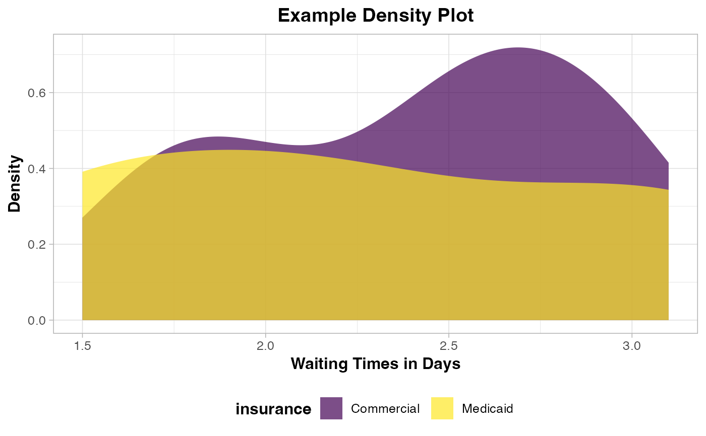

Create a Density Plot for Mystery Caller Studies with Optional Transformations
Source:R/create_density_plot.R
create_density_plot.RdThis function generates a density plot designed for mystery caller studies, allowing for the visualization of waiting times or similar outcomes across different categories, such as insurance types. The function supports transformations on the x-axis and custom labels.
Usage
create_density_plot(
data,
x_var,
fill_var,
x_transform = "none",
dpi = 600,
output_dir = NULL,
file_prefix = "density_plot",
x_label = NULL,
y_label = "Density",
plot_title = NULL,
verbose = TRUE
)Arguments
- data
A dataframe containing the data to be plotted. Must contain the variables specified in
x_varandfill_var.- x_var
A string representing the column name for the x-axis variable. This should be a numeric variable (e.g., waiting time in days).
- fill_var
A string representing the column name for the fill variable. This should be a categorical or factor variable (e.g., insurance type).
- x_transform
A string specifying the transformation for the x-axis: "log" for log transformation (log1p), "sqrt" for square root transformation, or "none" for no transformation. Default is "none".
- dpi
An integer specifying the resolution of the saved plot in dots per inch (DPI). Default is 600 for print-ready outputs.
- output_dir
A string representing the directory where the plot files will be saved. Defaults to a session-specific folder inside
tempdir().- file_prefix
A string used as the prefix for the generated plot filenames. The filenames will have a timestamp appended to ensure uniqueness. Default is "density_plot".
- x_label
A string specifying the label for the x-axis. Default is
NULL(uses x_var).- y_label
A string specifying the label for the y-axis. Default is "Density".
- plot_title
A string specifying the title of the plot. Default is
NULL(no title).- verbose
A boolean indicating whether to print messages about the saved plot locations. Default is TRUE.
Examples
# \donttest{
example_data <- data.frame(
insurance = rep(c("Medicaid", "Commercial"), each = 3),
business_days_until_appointment = c(1.5, 2.2, 3.1, 1.8, 2.5, 2.9)
)
create_density_plot(
data = example_data,
x_var = "business_days_until_appointment",
fill_var = "insurance",
x_transform = "none",
dpi = 50,
output_dir = tempdir(),
file_prefix = "demo_density",
x_label = "Waiting Times in Days",
y_label = "Density",
plot_title = "Example Density Plot",
verbose = FALSE
)

# }